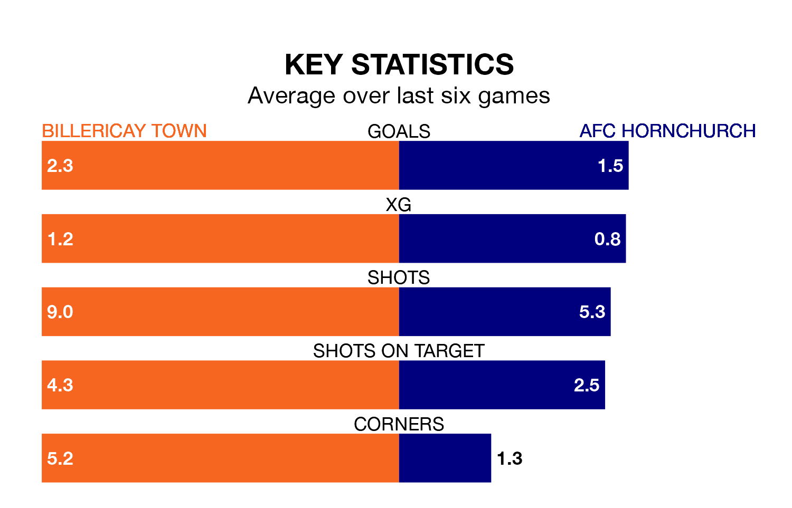

Two of Isthmian Premier Division's top sides face each other at the AGP Arena in Tuesday's late kick-off, when third-placed Billericay Town host table-topping AFC Hornchurch.
Billericay have picked up 14 wins and two draws from 22 games so far this season, and sit 10 points below the visitors going into the 7.45pm match.
Hornchurch, meanwhile, have won 16 and drawn six of 23, picking up 54 points.
With 59 goals in 23 games so far this season, Hornchurch are the league's highest scorers with 2.6 goals per game. And they are conceding fewer than average, letting in 19 goals at a rate of 0.8 per game.
Billericay are also above average scorers, with 1.7 goals per game, compared to a league average of 1.6. They have conceded 0.8 goals per game.
Town are in reasonable form in Isthmian Premier Division, with four wins and two losses from their last six games.
With two wins and three draws over that period, the away side's form is worse – they have taken nine points from 18, compared to the hosts' 12.
Over the last two years, Billericay and Hornchurch have played each other twice. Hornchurch won both of them.
Their last meeting was on April 8, when Hornchurch won 1-0 at home.
Billericay's last match was on Saturday, a 6-0 win against Cray Wanderers.
Hornchurch drew 2-2 with Carshalton Athletic last time out, also on Saturday.
Updated: 14:53 (UTC), 16/01/24